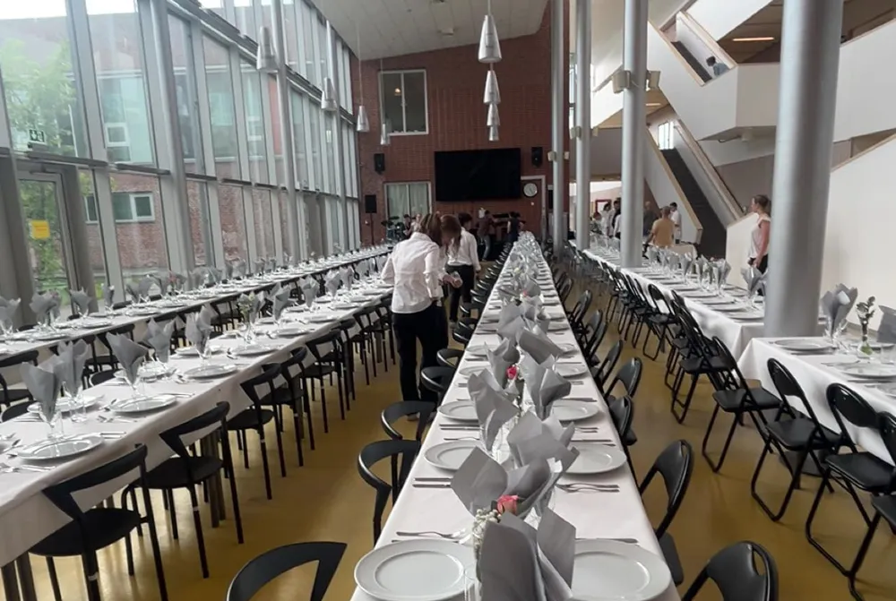

Östra gymnasiet

SKANDAL: Torr kyckling på balen
I onsdags förra veckan hade treorna sin studentbal. På menyn var kyckling med potatisgratäng och sparris. Allting gick bra fram tills det var dags för huvudrätten, när det visade sig att kycklingen var torr. Vittnen säger att man såg flera elever svimma av vätskebrist efter bara några tuggor. "Det var många faktorer som spelade in", berättar en i kökspersonalen, som vill vara anonym. För att laga en kyckling utan att den blir torr måste mycket bli rätt. Det atmosfäriska trycket, jordens placering i solsystemet och om Ulf Kristersson är på toaletten har bevisats ha stark korrelation till hur torr en kyckling blir. I studentbalens fall visade det sig att ingen av dessa punkter prickades. "Det är ett synnerligen ovanligt fall av otur", berättar matexperten Edward Blom i en intervju med Löken. "Det gäller ju att man har koll på det mesta när man ska laga kyckling".